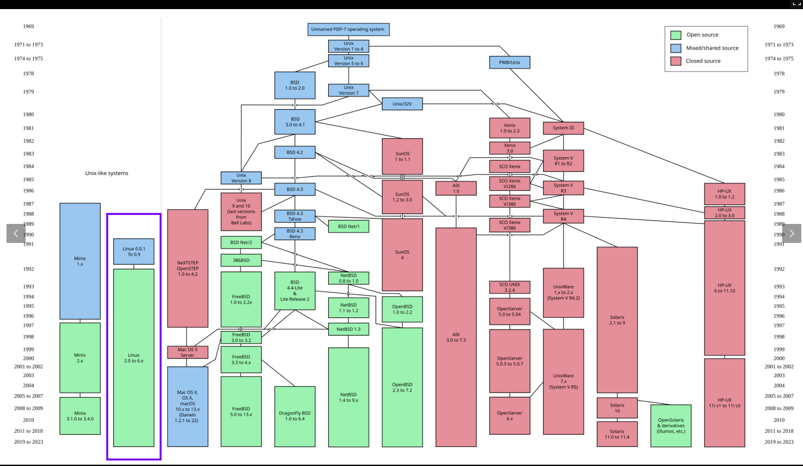
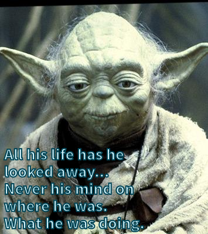
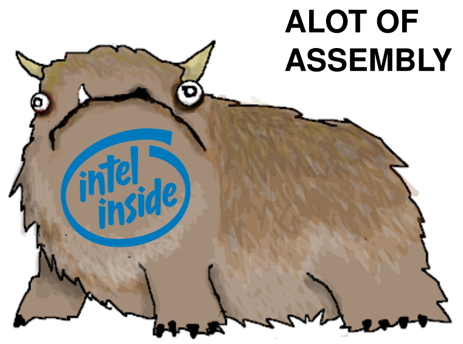
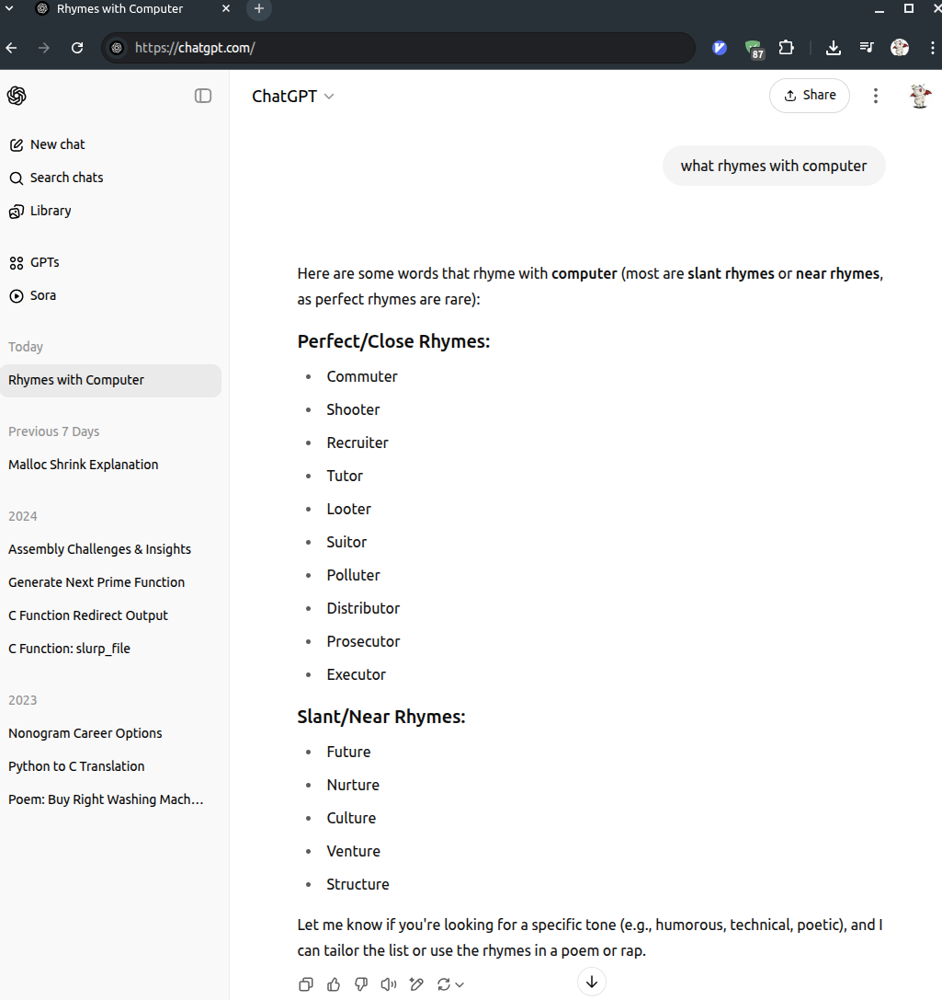
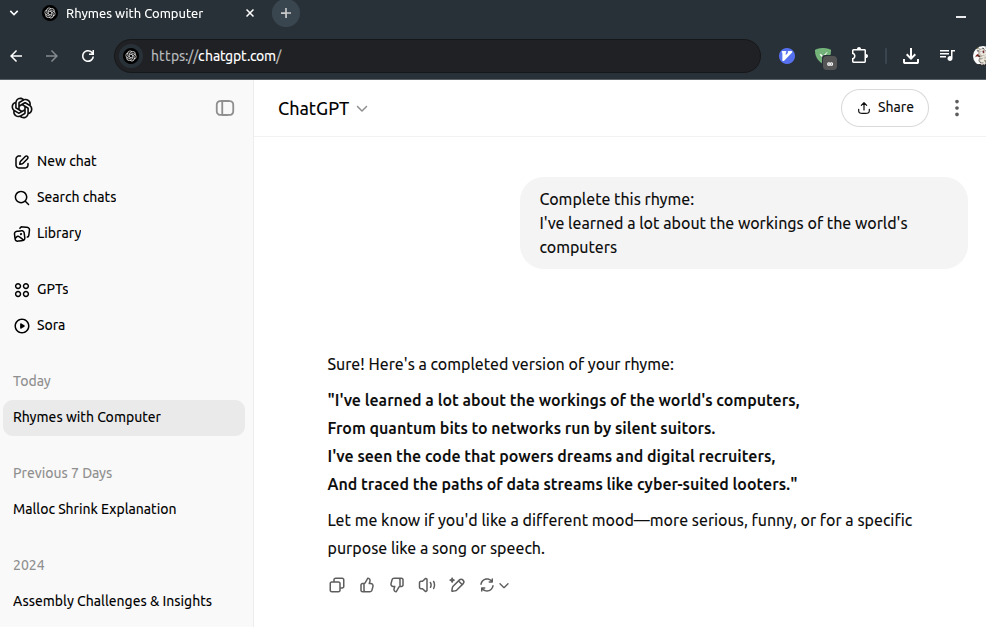

CMSC216 Exit Survey Results
Table of Contents
Summary Statistics for Multiple Choice Questions


Freeform Feedback
Frequent Items in Freeform Feedback
| Count | Comment |
|---|---|
| Overall | |
| 71 | Good course / enjoyed it / well structured / would recommend |
| 3 | Liked the flexibility built into course policies |
| Exams | |
| 6 | More practice questions for exams |
| 2 | Give a third midterm exam, two is too few |
| Liked having open resource exams | |
| Projects | |
| 31 | Inconsistencies on GRACE / Gradescope made P4 / P5 frustrating |
| 14 | Timeline for P4 and P5 was too short |
| 3 | Project videos helpful |
| Difficulty of projects incresed markedly over semester | |
| "Puzzlebin was deathly" / "Puzzlebin was devil's spawn" "Nightmare" | |
| Projects too time-consuming | |
| Figuring out what to do on projects was taxing / instructions vague | |
| Sunday 11:59pm deadlines please | |
| P3 was (too) hard | |
| Labs/HWs | |
| 1 | Labs + HWs were out of sync with lecture |
| Other | |
| 9 | Audio problems on videos were irritating |
| 4 | Want more Office Hours / more TAs |
| 3 | Would like more Office Hours later in the day |
| 2 | Want online Office Hours |
| Bonus Engagement Point system too complex / needs better explanation | |
| Too many questions in lecture, slows down the flow | |
| Have some required attendance element in Discussion like quizzes | |
| Want to know how many Engagement Points I have | |
| Need more help at the beginning with environment setup |
Props to Staff Members
A number of staff members were individually thanked by students in their free-form feedback for help during the semester.
| Member | Thank-yous |
|---|---|
| Abdullah | 3 |
| Adam | 4 |
| Amber | 4 |
| CJ | 8 |
| Emily | 4 |
| Jeffrey | 4 |
| Jeremy | 3 |
| Macy | 3 |
| Rohan | 6 |
| Saloni | 1 |
| Shaobo | 2 |
| All TAs | 14 |
Notable Freeform Responses
Student comments are given in plain face.
Instructor responses are italicized.
Lectures / Videos
Regarding the lecture videos, I think they were a nice feature but I could rarely find the video for the 11AM lecture, only the 9:30AM lecture.
Both lectures generally covered about the same thing so I only posted one video, whichever I thought went better. If you want to see what happens in your lecture, come to lecture.
Lectures are long.
Alternate take: your attention is too short.
Kauffman needs to… not answer as many questions as I find it difficult to follow along sometimes, which causes me to lose interest.
If the questions that others have cause you to lose interest, that's a bad sign. Focus on what they are asking and learn from it. Your generation has the reputation for poor attention spans. Surpass that characterization by improving your capacity to focus.
I think Professor Kauffman should try to minimize the use of overly elevated vocabulary words during lecture.
Inconceivable.
- I think the quality of the videos could be better since the mic would cut off or become incomprehensible at least once per video.
The static in the video recordings that happen every once in a while genuinely just hurt my brain to listen to… I'm surprised if it hasn't been brought up by anyone else yet and honestly that's my biggest complaint about this course.
In the last weeks of the semester I started noticing microphone malfunctions during lecture. A large number of students mentioned in this feedback that this extended to static, popping, and cutouts as well. I don't re-watch lecture videos, just post them, so I was not aware how bad the problem is. My $30 Amazon mic seems to have reached is end-of-life and I'll get a new one. I'm sorry that I did not hear about this earlier as I would have taken faster measures to fix things. Thanks to all who notified me in feedback about the issues.
One thing that was slightly frustrating for me especially towards the end of the course was that because the project overview videos were posted on Youtube there was constant advertisements. I counted that I had to watch almost 5 ad's in a ten minute timeframe which was pretty annoying when I had limited time to watch the videos and I was constantly being interrupted by advertisements. If possible it would be helpful if the videos could just be posted on Panopto like the lab walkthroughs and the lectures.
Gone are the good old days when if you didn't "monetize" videos on Youtube, no ads would play on them. I was not aware that this had changed and was a source of frustration. Likely I'll follow your suggestion and post project videos on Canvas instead as ads do nothing for students nor me and merely pad the pockets of Google. Thanks for notifying me about this frustration.
Please post lecture videos earlier, I didn't watch them often but there was a time I couldn't make it and was kind of annoying to have to wait until the next day since I went to discussion not knowing what they were talking about.
I find it annoying to post videos at all. It's more work and many of my peers have observed that it "enables" folks to just skip class even though they've made a commitment through enrollment to attend. I do it because many students express that it provides help for them. Be cautious when launching complaints like the above; with enough such complaints, folks like myself may seek to reduce the complaints about the timeliness of videos by just NOT posting videos.
- I have never had lectures be such well-paced… I also enjoyed how we could get bonus points for asking questions and how Professor Kauffman responded to my doubts.
- Lectures are alright however they include a lot of bloat can be from the excess questions people ask which made it hard to focus on what was actually being taught.
- I think a lot of kids asking questions in lecture was not that helpful because I would zone out… I feel like if kids have questions, they should save them for the end of the lecture.
- I think participating in class should be mandatory to a certain extent. Maybe, raise your hands 3 times throughout the semester for credit, and any additional times after is a bonus.
- In a massive lecture room, there are only so many times you get lucky enough to answer a question
- I felt bad asking questions since it would slow the lecture down a lot.
- You probably don't believe me but I promise at least half of the questions asked are from people pretending not to know something just to get participation credit.
I also love how Prof. Kauffman makes the class an environment where I don't feel judged asking questions if I don't understand something… engagement points are an incentive to participate, but the vibe of the classroom is much more supporting of us shy-folk and makes it much much easier to do so.
Like any policy significant decision, my choice to incentivize conversation in class has tradeoffs. I've set the policy as it is because the goals I wish to accomplish are facilitated by policy:
- Barriers to inquire more deeply through questions are low.
- If a point of confusion arises, someone will ask and that will benefit everyone with greater clarity.
- Our time together is not a broadcast by one but a dialogue among many as befits an in-person meeting at the academy.
These aspects might rankle some as they feel a "lecture" should be one person talking and others simply listening without interruption. Those folks are entitled to their opinions and are free to skip lecture and read the textbook which offers such an experience or perhaps watch recordings of me or someone else and skip the parts they wish. Those folks wish to learn on their own. As for me, learning together is a richer experience that teaches not only technical content but patience and appreciation for alternate perspectives. I encourage students to consider this part of their academic experience the next time they are perturbed by someone else's question: where will you learn to listen to others and hear them out if not in places like our meetings?
Like any policy system, there are benefits and costs to awarding in-class participation. According to the self-reporting of students in this anonymous survey, about 33% of students ask questions in lecture due to being curious and about 11% indicate they ask solely for to earn participation credit. That means about 1 in 4 questions is purely points motivated. I am fine with that ratio just as I am fine with the taxes I pay funding many things I like and some I don't. As has been said, "I like to pay taxes. With them, I buy civilization." (Oliver Wendell Holmes Jr.); or in our case, I like questions. With them we buy understanding.
My only complaint is that if you don't sit near the front center row, it's harder to get called on for a question.
Read the Syllabus and you'll learn about Hot Seats.
Following what Prof K says [in lecture] is like trying to hold on to barreling train…. It feels sort of like during lecture you're just holding on to hearing the words (the train) and rewatching you're like oh there was a mountain, we crossed a bridge etc.
Choo choo!
Projects
[P4] being assigned after finishing up assembly and a long break between projects also made it more difficult as I found I had forgotten how to code in C.
Forgetting makes everything harder. Hopefully the project helped jog your memory.
Make the projects more like the puzzlebin projects. Make it more like a puzzle which the student must figure out how to solve using the tools they know, rather than just reading a predetermined specification and trying to follow it as closely as possible.
The "puzzle" projects appeal to some but are actually not reflective of the norm for creating software. The two places I employ them have specific goals that align well with the style: basic debugger discipline, learning about features of assembly, and examining binaries. Other skills in the course require coding, not analysis, so are inappropriate to this style of assignment. If you are looking for more puzzles to build skills, you might try this.
- I learned so, so much from the projects, but they were also so, so time-consuming. I generally used almost all of the time allowed for projects, working several hours each day, and submitted 1-2 days before the deadline. It was stressful completing the projects and then realizing I had minimal time left for my remaining classes.
Most of my studying was done by legitimately doing the projects though so I guess it saved me time.
The intent was for projects to take time and teach. Glad that this appeared to be the case for most students. Learning to play an instrument, paint a portrait, climb a rock wall, or deliver a convincing speech takes time and diligent practice. Much of the world wonders out the ability of programmers to construct programs. When they wonder at your skill, you can relate the many hours you spent to hone your craft just as any artist, athlete, or leader does.
I would like to complain about project 4 which had its due date on Saturday rather than on Monday/Tuesday like all the other projects since it meant I didn't have the weekend to finish the project.
Sorry this didn't work for you. In cases where we could, we tried to peg deadlines to dates that would allow students to get last-minute help in discussion sections. As was observed by many students, the timing for P4 was bad and we'll avoid this trap in the future.
I felt that the projects were not very interesting. I think if the projects were designed around a real world problem and using computer systems to solve it would have made for more interesting work that has more applicability.
We built (1) a search algorithm, (2) an embedded display construction, (3) an interactive data structure program, (3) a small shell implementation, (4) an optimized data analysis routine, and (5) an implementation of a heap. I'm sorry if you found these uninteresting but your characterization of them as not "real world problems" is badly misguided. Please reflect on the nature of the projects more to understand where you are wrong.
In 132 I was able to finish most projects in a day I wouldn't say that they were easy but I definitely found myself able to enter a flow state when working on those projects as opposed to these. With these projects if I started a day or two after they were assigned I could definitely finish them in a more relaxed manner however, it would definitely be a multi day process.
While there is variation, as you mature, problems are not such that you can solve them in a single sitting. This requires you to develop skills to come into and out of a project over many sittings. That will be the norm as your academic and professional career advances. It seems you got some practice at that in this course which is great. Keep building those skills: how does one get quickly into the flow state, tune out distractions, and leave work in a state that is easy to pick up tomorrow. Programs are not static: they grow and evolve and tending them is our business.
However after completing the project, I actually felt very accomplished.
You should. Well done.
Project 3 was likely the MOST frustrating and maddening thing I have ever done in my life… like trying to catch a leviathan with a fishing net, like fighting a kraken with a paddleboard, like sailing through a hurricane on a lifeboat. I write all this to tell you: keep the projects the way they are.
Acknowledged. Come F2025, we will once again release the Kraken…
I wish that late projects would cost EITHER engagement points or a certain number of extra project points.
I'll consider it but the decision to separate late penalties into a separate category is intentional. It allows those penalties be offset by other means than performance on the coding projects.
I feel like the function descriptions of the last few projects have become more ambiguous. At the start, it was crystal clear as to how to implement something, almost to a fault, because I didn't feel like I was thinking sometimes. However, especially on project four, the descriptions were more confusing, and I often had to reread them to understand a simple concept.
Project 4 was more complex that earlier projects. It is hard to distinguish whether the ambiguity you sense is due to problems with the descriptions or instead a lack of familiarity with how to employ course techniques in the project context. I'll review the function descriptions on P4 and make adjustments where it seems appropriate. However, my intention over the semester is to move from prescriptive function outline (almost everything dictated) to descriptions of outcomes that leave students to explore how to accomplish the outcome themselves. This is part of maturing: connecting the "what" to the "how" yourself. Some amount of experimentation is expected in those settings.
I feel like my effort on the projects far exceeded that which went into the labs and homework quizzes. Both are worth 20% of our grade (projects vs. HW/lab combined).
As one of my past instructor observed, "Some points are easy to get, some are harder." That's by design. If you want them all, you'll need to commit.
Exams
I don't enjoy open note exams as I dont have time to look at notes and I think the fact that they are open note probably make them harder.
We are in a details oriented field but accumulating all those details is hard. I like to ask questions that poke your understanding of how things fit together and not on whether you can recollect the minutia. I think this reflects the reality of what your working life will be. I'd likely ask the same questions I do now irrespective of the open/closed resource exams as I they reflect what I hope you have learned. If that is harder, so be it. Doing what we do is hard, but…

I do think that studying for exams are hard due to the lack of materials… I completely acknowledge that this is because I've been spoiled by Larry [Herman]'s 20 page practice exams.
I'm glad that you disclosed that a past instructor provided such a large repository of practice. This helps me to understand student expectations better. As you indicated, providing such a large bank of practice questions is unusual. Before I came to UMD, I saw very few instructors provide past exams as preparatory material as writing exam problems that do a good job in evaluating understanding is quite difficult. I'll consider making changes but the following makes me reluctant to do so: every student who has approached me about wanting more practice problems has not been able to show me answers they wrote themselves for HW problems. They all just clicked through the online quizzes to get credit. At the point a large fraction of students come to me with their own answers to all of the practice materials that I've already provided and want more, I'd consider it more seriously. My perception is that what students want is more exam questions that they can memorize answers to and regurgitate on the upcoming exam. That's not the kind of learning I'm interested in encouraging so I don't feel a compulsion to provide additional practice materials. As Thelonius Monk responded once to the question of why he hadn't written more songs, "Why write new tunes? They haven't figured out the old ones yet."
The fact that I had to use my brain so much makes the projects the main contributing factor to my success on exams.
Glad to hear the existing practice worked for you.
A third exam would have been amazing.
I used to do so but the scheduling is so tight already it's hard. If 3-lectures per week at 50-min a pop were used for CMSC216, I'd consider doing a 3rd exam but not as is with the 2-lectures per week.
Discussions, Labs, HWs
- I know this sounds strange but I almost wish that attending discussion was mandatory, or at least maybe one a week. I got lazy as the semester went on and stopped attending which I think really hurt my grade.
- I think adding some sort of incentive for students to come to discussion could make discussions much more engaging and more full of life in general.
- I really liked the discussions being optional. I think some people benefitted from TAs giving explanations of the labs and homework but I preferred to do them on my own.
- For an average 5-person discussion, [TAs] really put all their heart and soul into teaching…. I went to basically all the discussions just for the jokes…. and learning, I guess.
I really liked discussion sections; the TAs were very enthusiastic and happy to help us.
After discussing with the staff, we have some ideas for next semester on how to incentivize attendance to discussions without compromising on the flexibility to skip them if needed. TAs are very interested in providing value to students and recognize that something needs to change to get folks into the discussions.
I think it'd be nice if the lab questions could tell you either a) what questions you got wrong or b) how many you got wrong. There's no distinction between getting one wrong or all of them wrong.
That is an intentional measure to make the labs more challenging. While it can be frustrating, ask for help or brute force it if needed. Developing confidence in your answers is essential. HWs are where things are intentionally easy but Labs are more than that.
I wish discussion had more worksheets to mimic written questions to help practice for exams.
We will consider this but you should consider the ramifications for such a decision: attendance to lab now becomes required to earn credit. That means a policy for missing labs, grading work for the worksheets, makeup possibilities for being ill, etc. It's a significant change and the benefit is not overly clear when HW already provides a spot you can practice writing answers if you want.
Please include some additional practice material for the tests. The homework assignments are good, but oftentimes don't reflect the format of the material on the test.
I'll review the HW but last time I checked, it aligns pretty well with exam-style questions. That is my intent when I write exams ans HWs.
I think the discussions could go over test like practice problems related to lecture instead of the lab to help better prepare students
Several pre-exam discussions had review exercises with exactly this intent. If you don't think those exercises were adequate, sate which ones were lacking.
I do think discussion, at times, could benefit from being online. I know a few commuter students who had to miss discussion on a few days because of traffic or bad weather, and I think having an online option especially for earlier discussion sections pre 10:00 might be helpful.
This is an in-person course. We meet in-person. There are quite a few resources provided for those that need to occasionally miss class due to other commitments. All assignments can be completed outside of class save for exams, lectures are recorded and posted, lab demos are recorded and posted and so on. If you want a truly online experience, find an online program in which to enroll. This is not that.
Engagement
I was (and still am a bit) confused about the difference between engagement and bonus engagement points, if any. Some more detailed description on how these points interact with late project submissions would have been great.
Perhaps this will help. It's been available to read since the beginning of the course.
One of the things I noticed with the Piazza posts/engagement points was that some students would take advantage of the bonus points and accumulate 50+ responses, one student going as high as 250+. This takes away the opportunity for other students to get engagement points on Piazza, especially those who cannot respond immediately when a post is made. I believe there should be a cap, perhaps at 20-25 responses, so other students can have the opportunity to respond and earn an engagement point. Another possible solution could be to apply a maximum number of responses per day, perhaps 2-3 responses maximum.
I understand the sentiment and the potential benefit from "rate-limiting" participation, Piazza does not have the technical capability to rate limit posts. If it did, I'd probably rate limit Question posting in some fashion first before answer-posting. This might encourage students to try harder to post meaningful questions and cut down somewhat on "here's my broken code, what's wrong with it?" type questions. These take a lot of back and forth of "show us the error messages" and "what was the test doing" and "what have you tried so far" and so on. Rate limiting might cause students to learn more quickly to include such details at the get go. However, we don't have any rate limiting capabilities and this is an education community anyway so I'd be loathe limit any questioner or those that are helping to provide answers.
The reward for answering Piazza posts is based on a log2() scale. Answering 15 Piazza posts gets 4 bonus EPs, answering 16 more for 31 total gets 1 more bonus EP. This is diminishing returns by definition. While there may be a few folks that are motivated purely by the bonus, I'm betting on such 'profit' motives as waning after the returns get small. Rather, many past students who were superstars on Piazza did so because they cared. Some of them are now TAs. I'd hesitate to do anything to diminish that pipeline. Nothing is stopping you from posting Notes about techniques you thought were helpful to know and then getting a "good note" endorsement from instructors that earns the same as an answer.
Some students definitely mark dots after lectures when they didn't participate or mark an extra dot when they did.
Several students wrote to me asking "why don't I have any dots? I know I marked them?" Those students got 0 dots because they had clearly marked more than was numerically possible in given time periods. While I'm sure the honor system didn't prevent everyone from getting exactly what they earned, egregious breaches were detected and got nothing.
I notice some students seem to mass reply to everything [on Piazza] as fast as possible, even when they don't actually know an answer in what seems to be some attempt at farming engagement points.
I agree that the quality of some student answers is lower than what I'd like. To boot, some students have taken to making minor edits to answers in an effort to get some credit. I'll thank about how this might be handled to preserve the community while limiting the gamesmanship.
Please remove the engagement point bonuses on participation and answering piazza posts… Please stop the in class participation credit too, 50% of the class is someone asking useless questions for engagement points.
According to the self-reported numbers show above on in-class questions, about 33% of students indicated they asked questions due to pure curiosity with abut 11% indicating they asked questions purely to earn bonuses. An additional 5% indicate they started purely motivated by the bonuses but became curious over time. If you believe in your peers honesty, then you are wrong on the motivation front: the majority of questions are asked to further the understanding of the asker.
As for the "useless questions" I keep mental track of what I think of as useless and not. Rarely does a useless question arise. Sometimes I have to repeat myself but that is part of education. Sometimes questions lead to tangents but often these are incredibly interesting areas to explore and enrich our discussion. I cannot say for certain what is useful or not for you but I'm suspicious of such blanket assertions especially when I find dialogue inspired by questions to be so useful for the class as a whole. If you want there to be better questions, ask some yourself. The academy / university is a place where people come together to learn from one another through dialogue. If that's frustrating for you, find a different environment in which to learn. In addition to the technical content of a major, academic work should teach you patience and respect for your peers and their ideas. That is an essential part of living in a society that allows for free inquiry.
I'm comforted by the fact that 89% of students reported liking the engagement points scheme as it is right now. We are not likely to ditch the EP system, just continue to refine it.
Technical Matters
On P4… if I ran make update right before I tested, my code would pass, and I would have to run make update before I run any test as it would somehow reset after every time I updated my code.
P4 involved systems programming which is pretty stateful: behavior changes based on whether files/directories exist, time is a factor, system load changes the outcome, and so on. I expect that your code modified something in the testing files and that caused the first runs to be fine but the change caused subsequent runs to fail. The
make updatewould restore the testing files and allow for passing again. P4 tests are among the hardest to write. Try writing some for yourself at some point and you'll get the idea. Then have 300+ students write buggy code and see if your tests hold up. I'm always surprised that the tests for this project work at all. I'll keep refining them to try to catch cases like those you describe but it's always going to be a losing battle.Teach us how to set up WSL or install the programs natively on mac, I don't want to use that goofy grace server
Picking an environment in which you can code from this class is hard. It's a computer systems class. That means to get the same behavior for all students, they need the same computer system. The easiest way to arrange that in the past is for students to log into the same computer system, GRACE in our case. It has some drawbacks and I'd like something better, but it adopts one set of problems so as to avoid the myriad problems that are present in having students run natively.
GRACE may be goofy, but so is your machine. You're still on WSL v1 and don't know it so the setup process we provide didn't work. Then there's your classmate that's still running Windows 10 so has a different WSL setup and bugs that come with it. Never mind your classmates with old Macs which can't install GCC and its ilk except through unofficial 3rd party package managers like Homebrew. Never mind the folks that don't bother with this, type
gccand say "see, it's installed" not realizing that the brilliant folks at Apple changed over to using CLang a decade ago but just symlinked the commandgccto a different compiler. And then there are your classmates that have newer ARM-based Macs that we can't have code Intel assembly as it won't run natively on their machines. "It has an emulator" you might say and you'd be right but it doesn't allow you to debug code (e.g. GDB won't work through the emulator) which makes it a hell of a lot harder for those folks. Would you like to code P3 without being able to use GDB to look at what your code is doing?I appreciate your desire to want to set up a different environment that is more convenient for you. Please always seek to do so. Figure out ways to make your workflow better. Those of us administering the course have a different problem: how do we create an environment that is fairly uniform and accessible to all students? It's almost impossible to give every student individual attention to set up, configure, and administer their own environment on their own machine in a way that leads to predictable behavior on coursework. The effort we put into trying this is effort that can't be spent on the actual course content.
I've spent considerable time exploring alternatives and arrived at the use of remote servers as the quickest, easiest way to get a uniform environment for students. I'd like to reconfigure GRACE and have some leads on how, but I disagree that local environments for students is tractable. Logging in to remote machines also teaches students how to access a remote machine and get work done there. You'll be doing that in many later courses and throughout your entire computing career. And most of the servers you access will be goofy in one way or another so get used to that part too.
Project 4 was the only thing I found hard in the class, because it took me a while to realize that using a shared folder in a virtual machine was screwing me over, I moved my project to a different folder and all the sudden it worked!!
Indeed: a shared folder between a virtual machine and the Native OS will likely have mixed conventions for the file system and permissions which will not go great. Glad you sorted this out: that's good knowledge to have as you go ahead as VMs and Containers abound these days. This is one of the reasons we are leery to have students use native solutions rather than GRACE: bugs are subtle and individual the student setup which makes it really hard for staff to debug.
- [On P4] I was passing 49/50 tests on Grace, the auto-grader failed all of the tests… I figured out my file permissions were written wrong and I got it to work.
There isn't anything seriously wrong with Grace, as far as I am concerned.
The only "serious" problem I see is it's awkward Andrew File System which does not obey the standard UNIX file
rwxpermissions conventions which makes projects like P4 harder to manage. We'll likely have fixes for that stuff in not-to-distant future.- The only thing I found annoying was repeatedly putting in my password and verifying duo push whenever I logged into grace or vs code, but there's nothing you guys can really do about that.
This is somewhat minor, but I would occasionally be dissuaded from working on labs/projects because of the overhead from logging into Grace. It truly only takes 15 seconds, but there were instances in which I had 10 or so minutes of free time to work, but chose not to because I'd have to log into Grace.
The login process is an irritating gumption trap that saps the will to work from everyone. It is an irritation I'm working to smooth. I have some evidence that we might be able to get a reconfiguration so that students don't have as much tedium in terms of logging in. At my past universities, login could be done using SSH Keys (public/private pair) which allowed password-free login and in some cases also spared the need to do Duo/2FA checks. I'll be working with admins this summer to see if we can set that up for servers used in 216 to spare students this bit of friction. In most industrial settings, if you are frequently logging into a server, you'll have such options available so it makes sense to teach about that here too.
My friend told me the trick to manually join less busy servers like grace 7 or 9, if I didn't know that trick, I definitely wouldn't have submitted some of the projects on time (especially project 4).
That was a "trick" we pinned on Piazza during P5 as it became necessary to get onto certain "well-behaved" nodes. I regret not discovering the changes the admins made to GRACE prior to those projects but based on the overall good results students had on the projects, I think we managed alright. Keep such tricks up your sleeve as they are likely to come in handy down the line.
I thought the projects were extremely helpful but I had major issues with tests passing in Grace but not passing in Gradescope.
That again is a pain point as I'd like tooling (compiler/Valgrind/library versions) to align between Gradescope and GRACE (or whatever server we use for the course). Aligning these will mean that student get more reliable results which everyone appreciates, especially those of us having to debug problems like the one your reported.
I had a small pet peeve in this course that during the projects the description for the code was always pasted below the method as opposed to it being above (exception being P5), but I always ended up copying and pasting the method specs to be above the method.
I vacillate between above/below for the documentation comments. It makes sense to me in a function listing to show the function prototype first and then a description of what it does like this:
int compute_special(int a, int b); // Computes an important value based on a and b. When a and b are // incompatible this function always returns 0. double **outer_prod(double *vec1, int len1, double *vec2, int len2); // Computes the outer produce of the two vectors. Returns a matrix of // dimension len1 * len2 with its memory allocated on the heap.
This allows the description to reference the arguments in the prototype. However, when I'd fill in the body of the function, I'd like the doc comment above the prototype like:
// Computes an important value based on a and b. When a and b are // incompatible this function always returns 0. int compute_special(int a, int b){ ...; ...; ...; ...; } // Computes the outer produce of the two vectors. Returns a matrix of // dimension len1 * len2 with its memory allocated on the heap. double **outer_prod(double *vec1, int len1, double *vec2, int len2){ ...; ...; ...; ...; }I use script to convert the solution in the 2nd form with its doc comments into the 1st outline form for students to read.
It's largely a matter of taste and you certainly weren't required to place the doc comments anywhere in particular in your own code. That's part of maturing: you get to see different styles, develop your own, and argue endlessly with others about subjective things like the "right style".
I got a really "funny" error on Project 5 with a negative 0. I fixed it but the sight was so utterly terrifying it nearly killed my will to continue.
I helped a few folks debug this kind of thing and it's one of the reasons that floating point computations are harder to test: they are finicky and have quirks like
+0.0AND-0.0. You can check our textbook if you're curious what the bit-level encoding difference is between these. I try to make most of the tests neutral to that kind of phenomenon but missed this instance of it. If you ever need to write tests for floating point code, you'll likely experience the same kind of pain. Something to look forward to…Still not sure what the difference between Unix and Linux is, but they were a cool aside to the course.
UNIX is the family. Linux is a member of the family, though sort of an "adoptive member" as it was created independently as a free version that mimics the characteristics of the originals. The Wikipedia article has a good account of where Linux joins the party as well as this family tree of UNIX.

When downloading projects early, oftentimes there will be small problems that Prof K. will address. A simple 'make update' would solve this. However, I noticed that 'make update' would not update any comments already in my code which would cause future headaches (due to not fully implementing a function properly). While not a big deal, it did cause some inconvenience. Also, the numerous typos within comments would bug me lol.
I've though about this some and don't have a good solution. I will continue to make mistakes and am also bugged by typos though resigned to the fact that I won't catch the them all. The general problem of allowing for an update to occur that modifies the code you've written is a bit dangerous: we'd risk overwriting your stuff which would be bad. To that end, it's not likely that we can achieve a seamless solution to updating inline comments (some students don't even copy them over) and simply have to rely on your reading the updated version of the project description.
Most recently Lab12 also had tests which depended on grace and would fail and then pass after changing no code.
That's performance for you: depending on prevailing conditions, sometimes its fast and other times less so. It's important to me that we teach something about coding for performance but that doesn't make it easy.
Maybe it's just me, but when all three parts of a project are unrelated (like in project 2), I'd prefer to have them more separated, like in different zip files when we download them just because, even though which files are for which are listed in the project description, it gets just a little bit confusing. Not that big of a deal, though.
Different strokes for different folks. I agree that problems in project 2 are less but it's much simpler to administer to have students download one zip versus three.
I wish we covered some of the more occasionally used language features in C. We skipped over some stuff I had learned on my own like variadic functions and function pointers, which aren't covered in 132 and I feel should be explored by this point. Also wish we spent a little more time on gcc/makefiles, compiling and linking, and stuff like using dynamic libraries.
I've taught a course like 216 at another university. The topic selection in that course was such that we did talk about several of these things with compiling, linking, and libraries being core topics in the course. That curriculum was different as student were required to take a second systems programming course where system calls, operating system interfaces, threads, and various other topics were covered. That also allowed discussion of additional OS topics like pipes, signals, sockets, semaphores, and a deeper dive into file systems.
When I arrived at UMD a few years ago and was assigned to teach CMSC216, my reaction to the topic coverage was "Yeesh, it's like the topics from two required courses were just pasted into the a single course." I learned recently that's because it is: UMD's CS curriculum used to have a required intro computer systems course and a required advanced computer systems course, just like my last university. At some point long before my arrival, the curriculum was reformed with most topics from the two required courses merged into CMSC216. That doesn't leave a lot of space to breath and some hard calls need to be made about what's actually done in the course.
If you want more info on compilation and linking, Bryant & O'Hallaron Chapter 7 has excellent information with coverage of separate compilation, linking, loading, and dynamic libraries. If you poke around the internet, you can probably find some of my old slides on the topic for additional support. As they say, "Never stop learning."
Hard Lessons
Towards the end of the semester I started skipping more and reading more from the textbook. While this was challenging as the way the textbook is formatted the main contents take up a lot of pages of dense writing, at least the process was more streamlined.
Awesome. Learning to read technical literature unlocks myriad resources to you to continue your learning. There won't always be someone around like me to blather about topics and, as many observed, the format of lectures may leave you wanting for a faster pace of some sort. Reading books turns out to be a pretty damn useful way to ingest information and I'm glad you discovered. Kudos!
I didn't like the fact that private questions on piazza were not answered as fast as public ones.
Private questions could only be addressed by staff and usually involved more analysis as it pertained to a specific rather than general situation. That's just the nature of the business. As you go forward, if your inquiry is very specific, expect it take longer to find answers.
I wish that Professor Kauffmann could give us an estimated time to complete each problem in the projects so that we could schedule time to work on the project accordingly, and if we did not complete the problem within the estimated time then we will know something is wrong and to go to office hours for help.
Such as estimate would have such high variance as to be useless. Students finish project problems between 1 hour and 1 week. Perhaps it might be good to warn students that if their pace for completing problems does improve over a project, they should seek help: if problem 1 takes 3 days AND problem 2 also takes 3 days, something is probably wrong. The trouble is that students are so variable as well. Some will hammer on problems on their own trying the same tactics over and over and getting the same errors over and over then complain that it take too long. Others will not work on the project unless they are sitting in office hours being told what to do by a TA and then complain there aren't enough office hours or TAs to get the project done. One of the joys of being a unique snowflake is that you have to figure out what works for you yourself and what your individual strengths and weaknesses are. If you finished the projects at all, that's great. If you learned something from them, that's the point. If you want to do them faster, come see a staff member as sometimes you need to be walked through some processes so you can adopt them for yourself. Generally I'd say if your stuck on a bug/failed test for an hour, take a break, try another 30min, then go find help. But if you're stuck because you don't know how to write a function at all, read some, study some lecture notes, and try some things first. The point is to learn to write code yourself. If you've not done that a lot, you'll take more time than those that are more practiced. That's expected and normal. But it does make it hard for us to give estimates on how long it will take you to do things.
The puzzlebin is project 3 was serious character development haha.
Ever notice that when someone describes a "learning experience" or mentions "it really built character" they are describing a situation involving suffering? Real learning is always uncomfortable. As my brawny brother-in-law often quotes, "If it doesn't feel heavy, you're not lifting enough." Or, as another great thinker put it…
I struggle to pay attention in lectures and discussions in general, so I found the large range of "other" resources offered in this course very very helpful, with the lecture slides, lab walkthrough videos, and in depth instructions for the projects carrying me through the class when it came to understanding the content. I have a bad attention span, so I am really thankful for that
I'm glad that the resources we provided helped you find a firing solution that let you learn. If you've identified that your attention and ability to focus is impeding you somewhat, spend some time working on that. The ability to focus on the hear and now is crucial to our craft so start cultivating it.

Future Advice
- One suggestion that I have for future students is to start the projects as early as possible, since they will often take you longer than you may expect. And if they don't, then you're done early!
- I REALLY appreciated the project explanation videos. Whenever I didn't watch them, it always took me way longer to understand the gist of the assignment and therefore get started in a meaningful way (in a way that didn't involve just downloading/creating the files etc).
- For future students, assembly is extremely hard, not an understatement that it's one of the hardest things I've done in my life
- I know my friends liked to skip discussion and never did the hws (til studying for exams), but I found them VERY helpful; I'm good at learning through application, so the labs (and ACTUALLY CODING THEM) made me cement the concept way faster than looking at code during lecture.
- I would suggest to future students that they complete the lab and homework for a given week before beginning the project. I tended to work on the project first, but missed the opportunity to learn material in the lab/hw that would have assisted me in completing the project.
- The more time you spend on any content, whether its a book, math problem, or Kauffman's project, the more time you have to interpret and understand the niche, edge cases of the material– which are the parts that generally give you bugs in your code. Start early, finish late.
- The projects (especially the later ones) really frustrated me at times, but I guess those are just growing pains associated with becoming a better computer scientist. So now that I get to look back, I think it will be good for future students to get to experience the same difficulty or harder.
- Start projects early, try and retain all available engagement points, go to discussions for the labs, have fun!
Sage advice all around. I'll convey this to future students. Perhaps some of them will heed that advice and sidestep the pitfalls that all of you warn about.
Misc
I wish we spent more time on assembly because I enjoyed it alot!
There's always one… that enjoys Alot of assembly.

If you're reading this, thank you so much for a great semester & I forgive you for torturing me with Project 3 :D.
You're welcome. Come see me in CSMC416 if you're recovered and thirsty for more.
It was fun gaining a bit more insight on how blood gets rendered in game engines.
So much can be learned from games and blood…
I'm a computer engineering major, and I feel like this class was the most engineering-like cs class I've taken so far, which was pretty cool.
CS is a young discipline formed from the hybridization of math (analysis and theory) and engineering (computer hardware). I'm told that UMD's CS department has its roots from the math and science realms which, confirmed to some extend by the department history available online (you can read more on history of the department here if you're experiencing insomnia). That means the culture of the department will have a bit of a mathy/theory bent. When I arrived here, a few years ago, another faculty member commented that UMD is "theory-oriented". My own education was at the University of Minnesota where the department grew from the engineering disciplines and had a strong emphasis on hardware for much of its history. While every instructor imbues their courses with some particular flavors, likely you can trace some of my flavor back to the institution that formed me that emphasized practical considerations. I'm glad what we did worker for you.
P4 was not cooking
Perhaps you just need a cooking lesson. Try this one from one of my mentors. Personally I think he'd make an excellent graduation speaker.
Student Feedback:
I came in knowing Java, C# and Python too, I heard the tales from people loudly praising what you do. I heard the horror stories, that you were just too hard. You got into their systems and you left their minds all marred. I learned about you deeply, about your pros and cons. You pointed out what I could to do from right to (very) wrong. I learned you were obsessed, with your fruitful memory. You liked when your things were allocated or were free. I found that I could see, that you were troubled or disturbed. I took things slowly, step by step, until I had you cured. I learned that one can go even deeper than they should moving registers around (in a much more sour mood). I learned about your writings, and how you wrote out every word... You write words with these numbers? How comically absurd... I learned about your home, where you move bits all around, in magnetic spinning disks (which continues to astound). I learned that you could spin, many threads into your realm, to carry out your duties while you stayed at the helm. I learned about your children, and your many family trees, I never knew that some were orphans (let alone zombies). I thought I wasn't ready, to get to know you all to well. But, C, you are wonderful (as far as I can tell...) I've learned a lot about the workings of the world's computers Thank you, 216, but also, what rhymes with computers?
Oooh, an actual use case for AI. Let's try.

I'm running: with
- "I've learned a lot about the workings of the world's computers"
- "Thank you, 216, I'm ready for all those future recruiters."
Not as epic as I'd like but better than what gippity came up with:

Bleck… the singularity is definitely not close…
- 216 with Kauffman really is a course where you get out what you put in.
No higher praise. Thanks.
- Hope whoever reads this has a good day :)
I have and hope you do too.